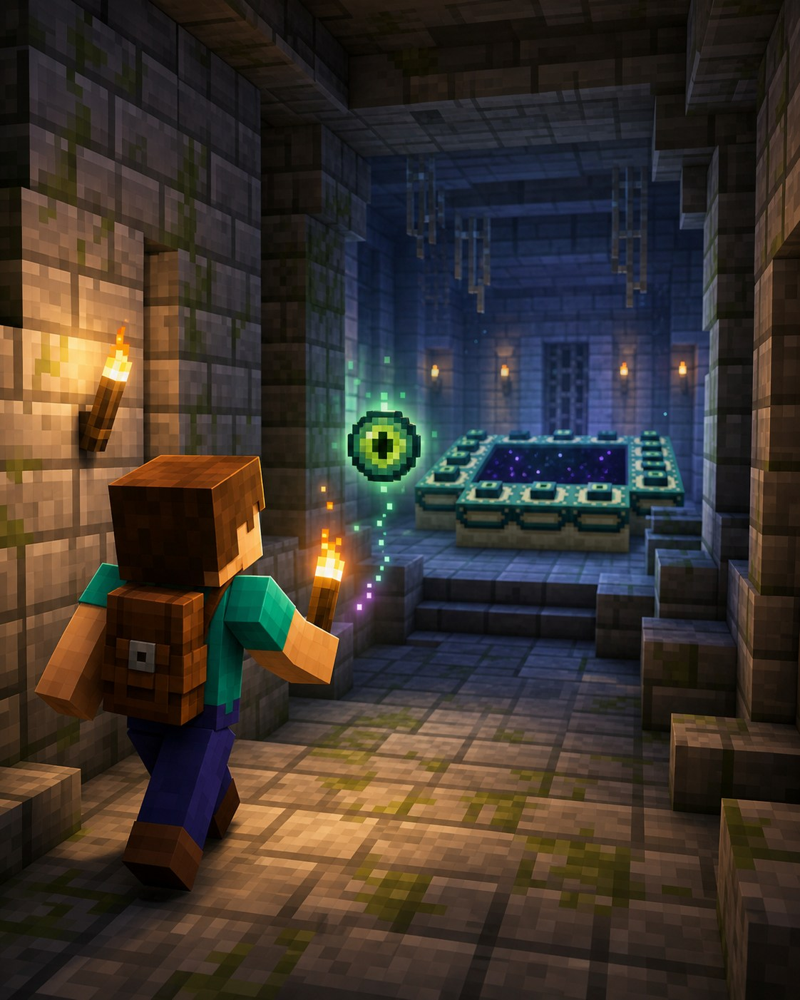

Велика пригода
Світ не закінчується вдома
Око Енду
вміє
показувати шлях.
Око Енду веде до підземної фортеці. Там захований портал до Енду.

Навіщо це потрібно?
Фортеця — це лабіринт із кімнатами та головною ціллю: рамкою порталу в Енд. Око Енду допомагає знайти її.
◆ знаходить фортецю▣ відкриває портал✦ веде до Енду
Три прості дії
Як знайти фортецю
1Створи око ЕндуПерлина Енду + порошок іфрита+
Потрібно кілька очей: деякі можуть зламатися, коли ти кидаєш їх у повітря.
2Кинь око в небіВоно полетить у бік фортеці+
Іди в його напрямку та підбирай око, якщо воно не зламалося.
3Коли око летить униз — копайСпускайся сходами, не вертикально+
У фортеці шукай кам’яноцегляні коридори та кімнату порталу.
Око Енду: як це виглядає
Перлина
Енду
+Енду
Порошок
іфрита
→іфрита
Око
Енду
Енду
● Для порталу потрібно до 12 очей, а ще кілька — для пошуку.
!
Підказка мандрівникові
Важливо знати
Очі можуть зламатися
Не вирушай лише з одним.
Фортеця — лабіринт
Став факели або блоки-маркери.
Портал ще не означає готовність
Спочатку підготуйся до Енду.
5
Маленьке завдання
Спробуй за 5 хвилин
- Зроби перше око Енду.
- Відкрий карту та підготуй місце для позначок.
- Збери запас блоків і факелів.